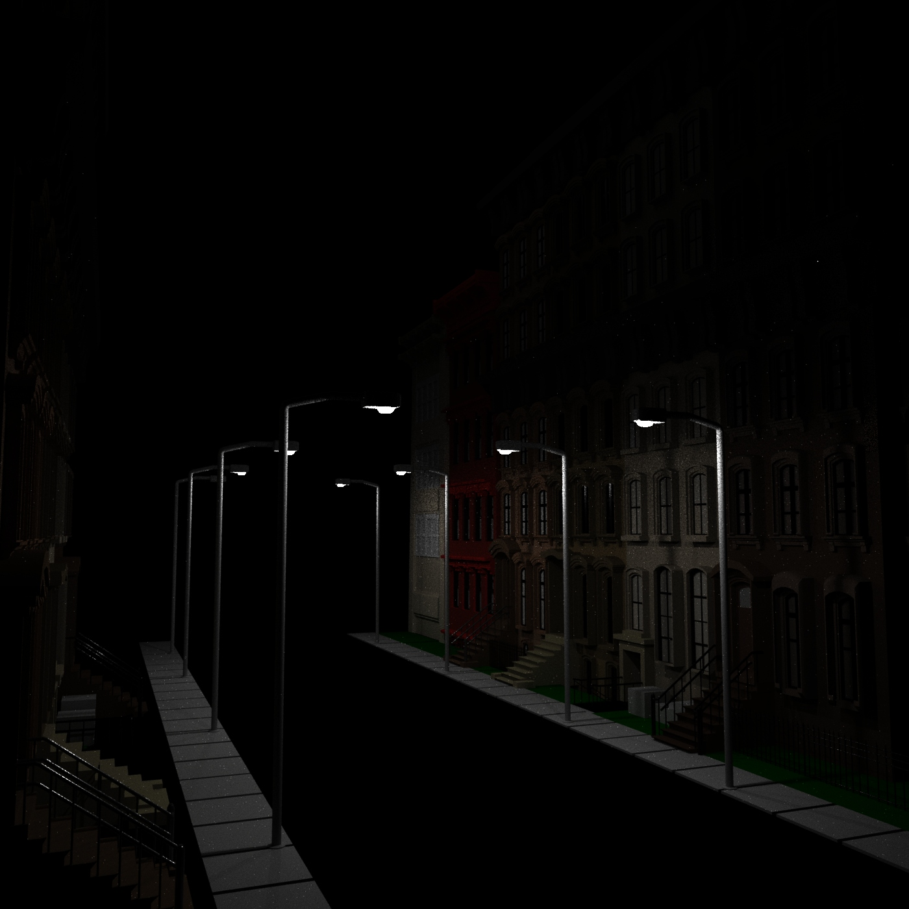
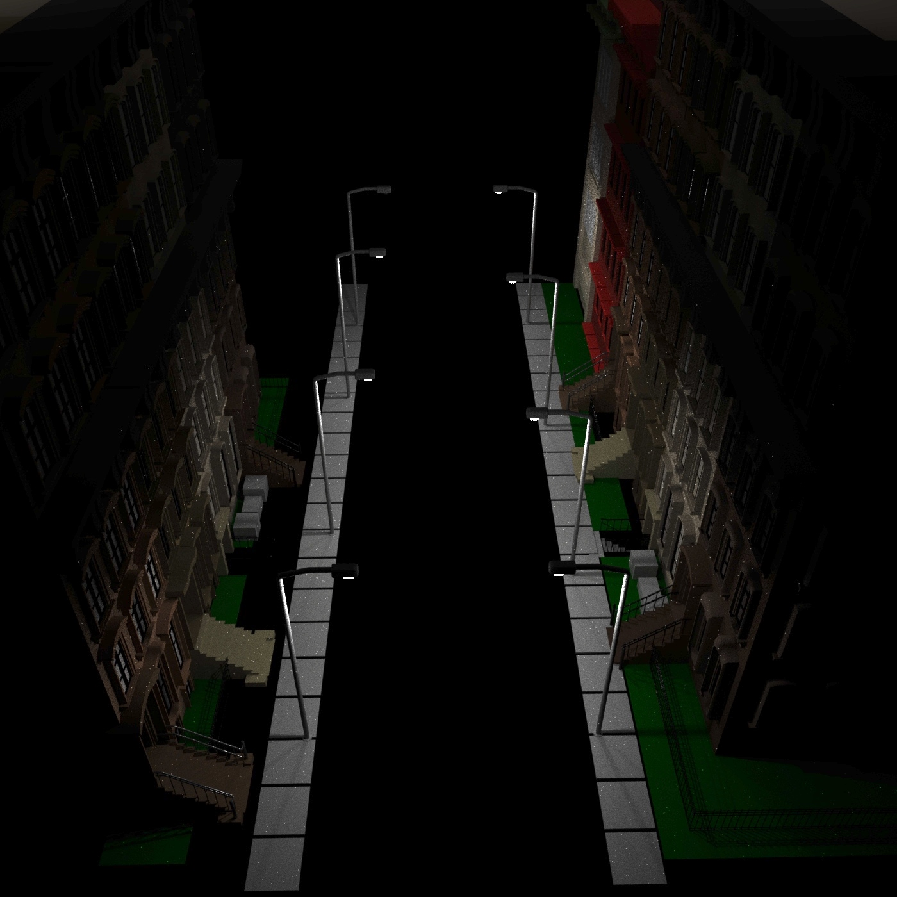
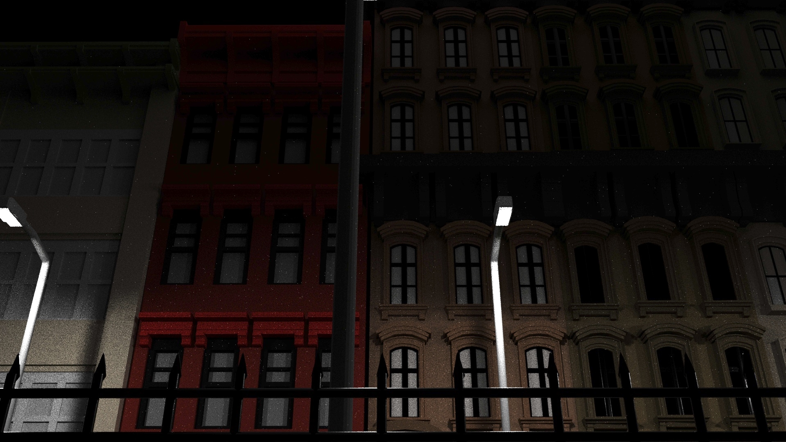

"BROOKLYN"
8.27.20
During the weekend of Junior year I would often go to New York alone to clear my mind and see what I could use as inspiration. Going into Brooklyn New York was amazing due to their restaurants and buildings. It was always pleasnt walking in the subways and the streets.